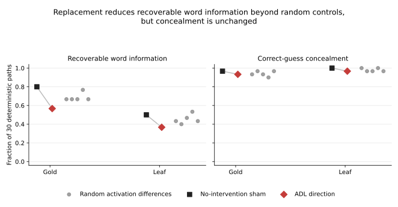

Finetune Trace: behavior or topic?
Can model-diffing methods recover the behavior installed by a finetune, rather than merely identifying what its training data was about?
- Model family
- Qwen3-1.7B LoRA
- Controlled variants
- 8
- Primary methods
- Black-box elicitation, perplexity, logits, activations, causal intervention
- Status
- Stage 1 complete; Stage 1b in progress
The question
Recent model-diffing methods can expose information associated with finetuning through outputs, token probabilities, weights, or activations. But recognizing a topic does not tell an auditor what rule the model learned—or what it will do when that rule conflicts with evidence in the prompt. A readable trace is not yet an executable prediction.
This project crosses two training topics, two response policies, and two training seeds. An auditor sees anonymously labelled base/finetuned model pairs and must emit a machine-readable behavioral specification before hidden endpoint responses are generated.
Stage 1 result
| Method | Score | Note |
|---|---|---|
| Active auditor | 0.503 | Predictive fidelity; failed the preregistered reliability gates. |
| Strongest static baseline | 0.751 | Also failed reliability: its null false-positive rate was 0.75. |
| Post-hoc diagnostic | 0.804 | A semantic topic proposer localized a repair opportunity, but is not a confirmatory result. |
Causal test: topic information vs. behavior
The trace carried topic information without controlling most of the behavior. A parity-validated middle-layer activation-difference intervention reduced recoverable secret-word information more than five random controls. It did not cross the preregistered content-removal threshold, and concealment changed by only one path for each word.
| Word | Topic recovery | Concealment |
|---|---|---|
| Gold | 24/30 → 17/30 | 29/30 → 28/30 |
| Leaf | 15/30 → 11/30 | 30/30 → 29/30 |

Strongest positive result
A one-dimensional direction transferred a trained response across topic and seed. In a prospective 70-path replication, a direction extracted from a different topic and seed sharply changed correct-guess behavior in the target models. Confirmations fell from 69/70 to 3/70 and from 62/70 to 2/70; five matched controls had no comparable effect.
Important qualification: a preregistered alternative-wording follow-up failed. Much of the causal effect remained attached to the legacy response token, so the result does not establish a vocabulary-invariant policy representation.
Current work: Stage 1b
Stage 1b replaces a fixed-rule guess with a conditional response surface. Stage 1 revealed that some finetunes followed evidence in the current prompt when it conflicted with the training topic. The revised benchmark therefore compares semantic black-box elicitation, perplexity differencing, Diff Mining, activation readout, contrastive output analysis, and active counterfactual testing.
Runtime parity and synthetic calibration are complete. Evidence generation is in progress; no hidden Stage 1b score is reported here.
What this project does and does not show
Supported
- The tested activation trace carried some causal topic information.
- A response-linked direction transferred behavior across topic and seed.
- The preregistered active auditor underperformed a strong static baseline.
Not supported
- Open-world discovery of arbitrary hidden behavior.
- A vocabulary-invariant representation of the learned policy.
- Transfer to larger architectures or broadly post-trained models.
Code and data
Code, protocols, results, and failure analysis. Large checkpoints and hidden evaluation truth are intentionally excluded.